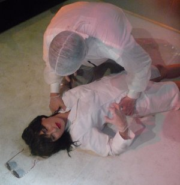

Ulrike’s Brain

Bruce LaBruceDE/CA 2017
55 min – German, English
B: Bruce LaBruce – DOP: Bernd Schoch, Heiko Alberti – E: Joern Hartmann – M: BunnyCat production
P: Jürgen Brüning, Bruce LaBruce
D: Jürgen Brüning – With Gertrude Stammheim, Susanne Sachsse, Jonathan Johnson, Saskia Timm, Stefan Sandrock
“The Brain That
Wouldn’t Die“: Imagine a plot of one of the numerous
B-movies coming from the 50ies and 60ies, mostly meant to create
an uncomfortable feeling about the atomic bomb and mutations
as a result of weird experiments by mad professors in the hands of
cinemtografic surgeon Bruce LaBruce who more than once surprised
us with his imaginative brain (!) that took us into incredible
regions
“where no man dared to go before”. Here we have two notorious left
and right wing extremists recreated by their masters to continue a
never ending battle. History is camp! (Bernd Brehmer)
saturday 7 oct 10.30 p.m. werkstattkino
with pretty boyz don't die & Intimität (Candelilla)
Bruce LaBruce * in Southampton, Canada in 1964, he attended film school in Toronto and studied film theory at York University. His film Hustler White screened in the Panorama in 1996 and was his first international cinema success. His work has often featured in the Berlinale, most recently Pierrot Lunaire which screened in the 2014 Forum Expanded and won the Teddy Award. He has also directed numerous music videos and theatre plays and contributes writing and photographs to international magazines, newspapers and websites. His work as an artist has appeared in numerous international exhibitions.
Films No Skin Off My Ass 1991 – Super 8 1/2 1994 – Hustler White 1996 – Skin Flick 1998 – The Raspberry Reich 2004 – Otto: Or, Up with Dead People 2007 – L.A. Zombie 2010 – Gerontophilia 2013 –Pierrot Lunaire 2014 (9. UX) – The Misandrists 2017